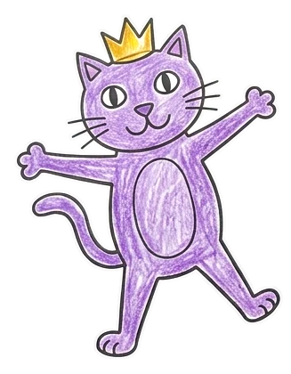
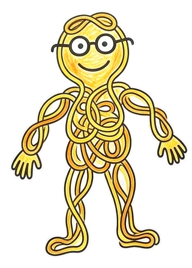
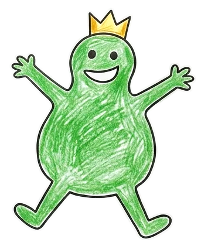
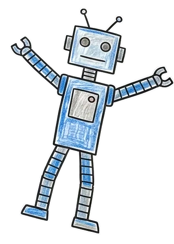

Doodle Theater
Every drawing gets its moment on stage.
Fire TV · Amazon Bedrock · Strands Agents · Bedrock Guardrails · Amazon Polly
github.com/biyonjose10/doodle-theater
open-source rigger in rig/ (MIT)
Characters drawn by a neighbour's child, cleaned up with Gemini. Used with a parent's permission.